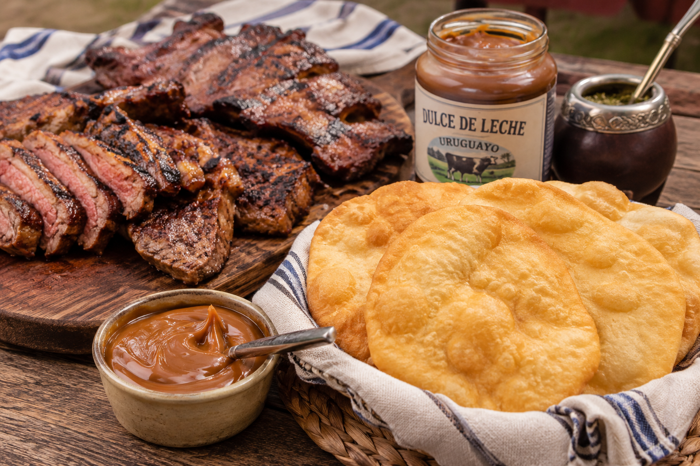

Escrito por: Noelia González
La gastronomía uruguaya forma parte de la identidad cultural del país. Sus platos y sabores tradicionales reflejan costumbres familiares, reuniones entre amigos y tradiciones que se mantienen a lo largo del tiempo. Entre las comidas más representativas se encuentran el asado, las tortas fritas, el dulce de leche y el chivito, reconocidos tanto por los uruguayos como por quienes visitan el país.
El asado, destacado por ser el ícono de la tradición y los encuentros, es uno de los platos más emblemáticos de Uruguay. Se cocina lentamente sobre brasas en la parrilla y suele compartirse durante reuniones familiares o encuentros con amigos. La calidad de la carne uruguaya y la tradición ganadera del país hacen que el asado sea una experiencia gastronómica única.
Las tortas fritas, que son el sabor principal de la tradición, son una preparación sencilla elaborada con harina, agua, sal y grasa o aceite. Son especialmente populares durante los días de lluvia y suelen acompañarse con mate. Su textura crujiente por fuera y suave por dentro las convierte en una de las meriendas más queridas por los uruguayos.
El dulce de leche, que destaca por ser el favorito de los uruguayos, es uno de los productos más consumidos en Uruguay. Se obtiene a partir de la cocción de leche y azúcar hasta lograr una consistencia cremosa y un color característico. Se utiliza en postres, alfajores, tortas, helados y muchas otras preparaciones, ¡como con las tortas fritas!
Resumiendo, nuestra gastronomía destaca por sus sabores tradicionales y por la importancia que tienen las comidas en la vida social y cultural del país. El asado, las tortas fritas, el dulce de leche, y entre los otros que no se mencionaron, algunas de las expresiones más auténticas de la cocina nacional, transmitidas de generación en generación y disfrutadas por personas de todas las edades.
ESPACIO DE PREGUNTA
2 comentarios
¡Compartinos tu opinión sobre este blog!
Me encanta como el asado siempre está en las reuniones
Las tortas fritas con mate en los días de lluvia es una tradición única